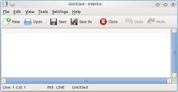
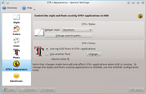
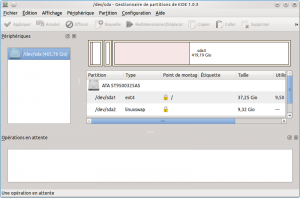
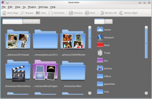
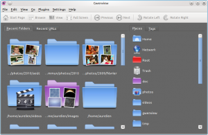

Here is a new addition to my series on common user interface mistakes in KDE applications.
This time I want to talk about being GNOME friendly. While that may sound odd for a KDE developer to think about GNOME, assuming we want our applications to reach the largest possible audience, we should try to ensure GNOME users get a pleasurable experience. After all, a user is a user, there are efforts going on to ensure KDE works well on Windows and Mac OS X, I think we should also take care of GNOME users. They are at least as likely if not more likely to contribute back to our applications.
As usual with Qt, it already does most of the work for us: when a Qt or KDE application is running on a GNOME desktop, it will uses the "gtk+" Qt widget style by default. This widget style uses GTK+ primitives to draw widgets, which helps a lot to blend your application in the GNOME land.
You can of course test how your application behaves on GNOME by running it on the GNOME desktop. This is interesting to do, at least to keep an eye on what our fellow competitors are doing, but it takes quite some time. There is a faster way: start your application with these arguments: "-style gtk+".
KWrite running with the GTK+ style (Clearlooks GTK+ style):
The style 'gtk+' was not found
Tough luck: your version of Qt was not built with gtk+ support, not much to do here, except rebuilding Qt or using a different one.
If on the other hand you get something which looks a lot like Oxygen, chances are you are running the Oxygen GTK+ theme! This theme is great to integrate GTK+ and GNOME applications on a KDE desktop, but it's not really helpful here. There are a few ways to change your GTK+ theme from within KDE. The simplest one is probably "kcm-gtk", a GTK+ KConfig Module available from https://code.launchpad.net/kcm-gtk (Would be a nice candidate for inclusion in KDE SC!)
Enough testing, let's fix bugs now!
Now, the same application, using the GTK+ style:
As you can see, there is quite a lot of wasted space. The fix is simple: call setMargin(0) on the layout in the embedded widget and the problem will go away.
Another good practice to make your application GNOME friendly is to use QFormLayout instead of QGridLayout for typical "label: [edit widget]" dialogs. Using QFormLayout ensures your labels will be correctly aligned: KDE 4 HIG says labels should be right aligned, while GNOME HIG prefers them to be aligned on the left.
One of the oldest GNOME vs KDE troll is button order in dialog boxes: KDE uses the OK-Cancel order, while GNOME uses Cancel-OK. If you use KDialog instead of QDialog as a base class for your dialogs, you won't have to worry about it: the button order will change according to the platform.
If you cannot use KDialog, for example because you develop a Qt-only application, do not create individual OK and Cancel buttons: use QDialogButtonBox. This class lets you define a standard dialog button bar: you just need to specify which buttons you need. If for some reason you develop a KDE application but do not want to use KDialog, be sure to use KDialogButtonBox, KDE version of QDialogButtonBox.
Update: Pau Garcia i Quiles points out you can also use QIcon::fromTheme(). You won't automatically get icons on Mac OS or Windows this way (contrary to using QStyle::StandardPixmap), but you get access to all icons from the current freedesktop.org icon theme, this is likely to cover most if not all of your icon needs.
Before:
After:
If you are interested, here is the diff implementing this hack.
{kind=link}
{kind=link}
{kind=link}
{kind=link}
{kind=link}
{kind=link}